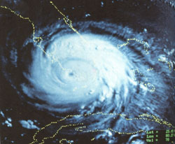
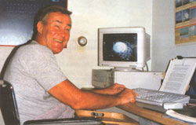
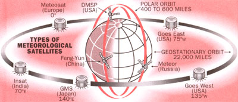
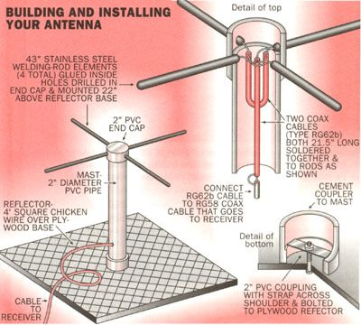
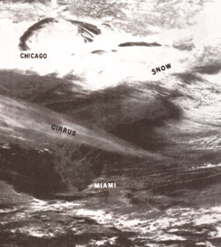

ENVIRONMENT
Capture satellite weather images with a home-built antenna and a PC.
An MIT grad shows you how.
An early season cold front is expected to hit the state tomorrow and you decide to harvest a bit earlier to avoid crop damage. Or a forecast of weekend rain coincides with your long-awaited fishing trip, and you're not sure whether it's worth risking the two-hour drive. Sure, the weather bureau or local television station can tell you what to expect-in general. But in many cir cumstances, their regional reports are not comprehensive enough to be of real use, especially to those whose livelihood depends upon an accurate forecast. Forecasts produced by weather stations are no longer the property of million-dollar media centers. They are available inexpensively to anyone who owns a personal computer and has a healthy interest in the skies.
Predicting the weather reliably requires information. Where is the nearest cloud formation? What kinds of clouds does it contain? What's the temperature within the formation? In what direction is the prevailing wind? Meteorologists answer these questions largely by using one critical tool: the satellite photograph.
Unmanned meteorological satellites provide some of the most spectacular and useful visual information, surpassing both the predictions of the weather bureau and television for sheer volume of information. There are innumerable ways to use the data: Agriculturists use the photos to inform the farming community when weather conditions are most favorable for planting, fertilizing, and harvesting; hydrologists use them to evaluate rainfall conditions, predict areas of flooding, and provide safety warnings; the construction industry uses them to detect rain, lightning, and snow, aiding workers at construction sites .... The list is endless.
Polar-orbiting weather satellites circle the Earth approximately every 100 minutes, providing coverage of the entire world. Each day and night, these 450-mile-high, polar-orbiting weather satellites of the United States, Russia, and China can "see" far enough to show you Capture satellite weather images with a home-built antenna and a PC. An MIT grad shows you how. By Hank Brandli Opposite: A-spectacular satellite photo of Hurricane Andrew as it hit southern Florida on August 23,1992. The state outlines are drawn with computer software that can also enlarge the photo up to 20 times. Above: Both polar-orbiting and geostationary satellites take weather photographs 24 hours a day the weather heading your way up to 48 hours in advance. These 1,000- to 1,600-mile belts of imagery are transmitted via automatic picture transmission (APT) systems, whose media are simple radio waves. Most take both visual and infrared (thermal) images during the day, and only infrared at night; the images can be received from any of these satellites when the spacecraft is above your horizon. They can be captured and observed as easily from the home, business, classroom, boat, or aircraft as from any television station.
There are also several high-altitude satellites, following a geostationary orbit, that photograph the Earth from 22,000 miles, but their signals can be received only with expensive equipment. A simple antenna, preamplifier (which amplifies weak signals), and receiver, together with a home computer, is all you'll need to receive detailed and accurate weather data from polar-orbiting satellites. Even without a computer, there are other ways to display the images and have the thrill of making your own local forecast.
Three American NOAA (National Oceanic and Atmospheric Administration) polar-orbiting weather satellites in sunsynchronous orbits (satellites that come over at the same local time respective to the Sun) transmit 1,600-mile-wide images of the same location at approximately 8 A.M. and 8 P.M. , 2 A.M. and 2 P.M. , and 5 A.m. and 5 P.M. China's Feng Yuri, similar to the NOAA satellites, takes images at 9 A.m. and 9 P.m. The several Russian meteor spacecraft transmit mostly 1,200-mile-wide pictures. Their near-polar paths allow photo-taking at opposite times during the day. Unlike the satellites of China and America, Russia's satellites remain at a high latitude and therefore work on a different schedule. So if the satellites take a picture at 11 A.M. one day, the next day they may take pictures at either 11:30 or 12:30. NOAA satellites can pinpoint areas of clouds as small as two miles wide; Russia's can record features on the Earth as small as one mile wide.
Images can be recorded on plain old audio tape since the satellite signals are FM radio waves between 137 and 138 MHz (a hertz is a unit of frequency equal to one cycle per second; megahertz are equal to 1 million hertz)-but that won't help you see the data that you want to see.
Photographic facsimile machines make nice images from satellite signals and can be obtained from surplus outlets for as little as a few hundred dollars to as much as a couple of thousand. Other options are available, of course, but the method I heartily recommend uses what many households already have on hand: a personal computer.
An interface circuit-which is an actual card you stick into one of the expansion slots in the computer-converts the satellite signals into smaller bits of data so that the computer can process and store them. In effect, this allows you to receive and display excellent pictures on your personal computer. Cards are available from a number of computer companies, and all come with the appropriate software and instructions so that even a novice can be up and running in a few minutes.
Low-quality prints can be made with standard printers and high-quality prints with laser printers. On your PC you can even "zoom in" on an area of interest, enlarging it as much as 20 times, so you can actually research the conditions of that lake you're planning to fish tomorrow. Adding some colors will make these conditions even easier to read; for instance, you can mark cold temperatures in blue and warm in red, or use any other color combination you like. Another advantage is that you can leave the system on to record while you're away, and view the stored images later at your leisure. Once the data is stored, the possibilities are nearly endless.
Visual satellite photos are very easy to understand because things look pretty much as you would expect: clouds are white, land is dark, and land masses are usually identifiable. Infrared photos, on the other hand, are somewhat harder to understand without some explanation.
Infrared film records temperatures. Hot temperatures appear black; cold temperatures white. Because high clouds, for example, are colder than low clouds, high clouds appear much whiter. Thunderstorm and tornado cloud patterns stand out on infrared images. When there are no clouds, land and water temperatures can also be distinguished. The computer allows you to add color for easy determination of temperature differences; simply assign different colors for ranges of gray tones, which correspond to temperature ranges, and watch the picture jump right out at you. With infrared or visual images, cold and warm fronts are easy to detect and can be tracked to give the exact time of arrival with their inevitable rain, snow, or wind. Fog burn-off rates and the extent of stratus clouds can be calculated similarly by comparing a series of photos.
Using infrared and visual images, hurricanes and other tropical storms can be spotted day and night. With a series of photos, tracing storm movement is like playing "connect the dots." In 1988 I tracked Hurricane Gilbert, the most powerful hurricane in history, through the Caribbean. In September 1989, I followed Hugo's havoc in the Atlantic and his arrival in Charleston, South Carolina, where wind and water did more than $1 billion in damage. Of course, during a hurricane season, my life takes on a whole new dimension. Questions come streaming in from all over Florida. "When is it coming?" "How bad do you think it's going to be?" "Should we stay in our home?"
On August 17, 1992, I picked up Hurricane Andrew's image from a Russian satellite. I tracked this monster every day, knowing that Florida, where I live, was directly in its path. As soon as daylight hit on the morning of August 24th, I had one of the best satellite images of Andrew (including those of the U.S. Weather Bureau and the Air Force) ever taken. It was so in credible to be able to watch the tremendous organization of this storm and how it formed-and to do it right in my own home. I ultimately had a professional photographer shoot this imagery right from my computer screen, and it was then published in the April 1993 issue of National Geographic.
After getting multiple sclerosis, I retired from active duty in the Air Force to continue my meteorology work from my wheelchair-designed home near Kennedy Air Force Station Cape Canaveral in Florida. Continuing the work I love so much meant building my own satellite receiving station at home. I already had a PC to display the satellite images, but I still needed some other basics: an antenna, preamplifier, and receiver. I had no idea how to even start with the assembly so I called upon a technician-friend, Holly Johnson, who helped me set up the system while explaining how it worked.
Holly started by building an inexpensive antenna for my roof (see Antenna Diagram Above). He used a two-inch PVC pipe and four 1/8"-diameter, stainless steel welding rods, each 21" long (all purchased locally for approximately $4). He connected the rods with two phasing cables (RG62B coaxial) inside the PVC pipe. Some chicken wire was also needed for a 4' x 4' ground plane for the antenna.
Commercial versions of Holly's antenna are also available from a variety of vendors, but it is very easily put together by hand for virtually nothing. (A group of Pennsylvania high school students modified a $15 Radio Shack radio antenna for their weather satellite station.) I was skeptical of Holly's antenna, which looked like a big old bird roost. But he assured me it would work fine, and I proceeded to work on finding a radio receiver.
Vanguard Labs in New York sold me a receiver with five tuning crystals and an antenna-mounted preamplifier for less than $200. Each crystal allows me to receive signals at different frequencies; all I have to do is flip a switch and I'm on a particular satellite's frequency-no tuning dials needed. If you're willing and able to modify a standard FM receiver, you can cut even more of the cost, but without crystals you'll have to carefully tune in each satellite with dials. (Sometimes you can find crystal-type receivers for satellite reception at government-surplus stores and retail outlets for as little as $100.) Some modern receivers, though more expensive, now have an automatic scanning feature and can automatically check all frequencies to pick up incoming signals.
We set up the antenna on my lawn for the first test, and placed chicken wire under the antenna with the coaxial cable running through the garage window to the receiver. After connecting the receiver to the laser fax inside the house, I tracked when one of the satellites would be within range, and we tuned in. The first signal was not very strong, but we could see that different orientations of the welding-rod antenna strengthened the signal. It's just like moving the old rabbit ears around on top of the TV for better reception.
Convinced that the system worked, we needed to anchor the "bird roost" antenna on the roof. Here we got a little creative: we took two denim dungaree legs, filled them with sand and tied the ends, creating a solid sand bag. These sandbags, cabled to the antenna, served as an excellent anchor and are still in use today.
I must tell you that the first time I received a weather satellite image in my home was incredible, and I can only describe it like this: After being compelled to retire from a profession early in life that I truly loved, and then finding a way to continue my work on my own-I felt like I was being given a new lease on life.
After a couple more adjustments to the rooftop antenna, a beautiful photo pair from southern Canada to South America came in. One picture was infrared, showing water temperature, land, and cloud, and the other was in the visible spectrum. Before we could even catch our breath, a "thump thump" signal was followed by a picture from the Russian meteor satellite. What a remarkable feat we accomplished and right in my home!
That was over 10 years ago. Today it hay been made even easier to receive satellite pictures. Many companies now offer multiple versions of the analog-to-digital cards as well as the accompanying computer software, allowing you to tailor you I forecasting station exactly as you need it. A fully functional, basic card with start-up software can be had for as little as $250, though the price will go up if want your computer maps to have longitude and latitude grids, individual state boundaries, etc. With a basic card and a homemade antenna, you can be a budding meteorologist for under $300. My advice would be to start as simply as possible, then identify what you really need to pay extra for.
Today, I feel the same way I did the first day I received my first weather-satellite views at home. I consider each and every photo a work of art, and the first thing I do when I arise is turn on my equipment to check the current weather. I've learned to appreciate daily the engineers who've crafted such wonderfully technological vehicles, who've launched them into space, and who've designed them so that even the average layperson can share their endless possibilities. It's truly wondrous.
Editor's note: Hank has a bachelor's degree cum laude in mechanical engineering from Tufts University and two master's degrees from MIT in meteorology and aeronautics. Since his retirement from the U.S. Air Force in 1976, he has become one of the foremost authorities in the interpretation of environmental satellite data. While he frequently consults for authorities and writes books on the topic, his favorite job is teaching others how to interpret the images taken by the satellites in our sky.
Here's a list of potential sources for the equipment mentioned in Hank's article; you may want to check them out:
Antenna, receiver, preamps: Vanguard Labs, 19623 Jamaica Ave., Hollis, NY 11412 (718/468-2720); or Software Systems Consulting, 615 S. El Camino Real, San Clemente, CA 92672.
Cable: RG62B coaxial (Any hardware store has them).
Facsimile equipment. Atlantic Surplus Sales, 3730 Nautilus Ave., Brooklyn, NY 11224(718/372-0349).
PC equipment Tri-Space Inc., PO. Box 7166, McLean, VA 22106 (703/442-0666); or Lockheed Missiles & Space Co., Austin Division T2-30, 6800 Buleson Rd., Bldg. 31, Austin, TX 78744 (512/386-2920).
|
 ROB DOWNEY Both polar-orbiting and geostationary satellites take weather photographs 24 hours a day. |
 HANK BRANDLI A spectacular satellite photo of Hurricane Andrew as it hit southern Florida on August 23, 1992. |
 SCOTT MACNELL Russian satellite image of eastern United States on February 24,1993. The different cloud formations?such as the fair-weather cirrus in the South vs. the storm clouds in the North?are easily recognizable from 600 miles up. This photo (which does not include state borders) can be generated using even the least expensive software |
|
 |
 |
|